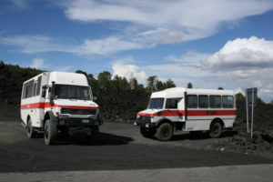

A soli 50 km di distanza, si può raggiungere per un emozionante escursione il vulcano Etna, alto 3457 metri, il vulcano più alto d’Europa ed il più attivo del mondo, dichiarato dall’UNESCO nel 2013 “Patrimonio naturale dell’umanità” , resta una delle mete più ambite e frequentate da escursionisti di tutto il mondo. Si può raggiungere il vulcano ed arrivare sulla vetta da due versanti, quello di Linguaglossa “Piano Provenzana” e Nicolosi “Rifugio Sapienza”.
L’eruzione del Vulcano Etna che ha avuto inizio nell’ottobre 2015 è stata una delle attività esplosive più forti registrate negli ultimi 20 anni, la sabbia vulcanica prodotta ha raggiunto la costa di Reggio Calabria.
La frequente attività esplosiva del cratere sud-est dal 2010-2013, degli ultimi anni, ha fatto crescere in fretta la cima del Monte Etna di quasi un centinaio di metri, un record per un vulcano attivo. Chiunque abbia fatto una escursione nella Valle del Bove, lungo l’itinerario classico del Pian del Vescovo, Acqua Rocca-Cannalone dei Faggi, sarà rimasto stupito di non trovare più molti dei luoghi che hanno caratterizzato le escursioni di una volta. Piano del Trifoglietto non esiste più, né il rifugio Gino Menza o grandi faggi secolari che formano un piccolo bosco, più in basso si sono formate dighe di lava alte diversi metri.
Dopo aver raggiunto la Montagnola a piedi o in funivia, si marcia fino al ciglio del Valle del Bove si prosegue verso est fino a quando si riconosce il lungo sentiero di sabbia che degrada ripidamente in fondo la valle.
Si deve saltare da masso in masso per raggiungere il limite dei nuovi flussi di lava, mentre in passato si sarebbe andati giù sulla sabbia per almeno altri trenta metri. Ora la strada è bloccata dal groviglio di decine di colate laviche sovrapposte l’una sull’altra.
E ‘interessante vedere la morfologia del suolo nelle immediate vicinanze della colata lavica, se si ha il tempo di procedere verso sinistra, fiancheggiando il flusso verso le sue bocche (ci vogliono almeno due ore per raggiungerli). Quelli con meno tempo a disposizione possono salire leggermente lungo la gola fino a che non arrivano a un percorso pianeggiante, dopo poche decine di metri fino ad intersecare la scanalatura.
Piano Provenzana
è il più ricco di vegetazione, le piante conifere fanno da perfetta cornice montana specialmente d’inverno quando le cime dei pini sono ricoperte dal manto nevoso, mostrando lo sguardo verso l’orizzonte osserviamo Taormina che svetta sul litoraneo marino. D’inverno gli impianti di risalita ci permettono di attraversare le cime vulcaniche con gli sci o semplicemente per fare delle passeggiate in cima al cratere.
ESCURSIONI CON FUORISTRADA
Sono possibili delle escursioni con pullman fuoristrada che si arrampicano per un paio di chilometri sui pendii rocciosi e sabbiosi del vulcano fino a poche centinaia di metri dai crateri, che ricordo essere molto pericolosi. In entrambi i versanti troverete dei negozietti che vendono suvenir in pietra lavica e ristoranti con la classica cucina siciliana.
Vi ricordo di partire attrezzati con maglioni e Kway anche in piena estate, se a Catania ci sono 34/38° C. a circa 3000 m. di altezza potrebbe scendere da 4/10° C..
Le gite più suggestive sono quelle al tramonto o più raramente quelle con il Vulcano Etna in eruzione, anche se pericolose.

si affaccia su Catania ed all’orizzonte si può scorgere Siracusa, il panorama mozzafiato si alterna tra quello montano e quello marino, anche qui troviamo gli impianti di risalita, la funivia è aperta tutto l’anno per consentire escursioni sul cratere. Le piste da sci sono preferibili a quelle del versante opposto, ma a causa dell’esposizione a sud sono fruibili solo per brevi periodo.